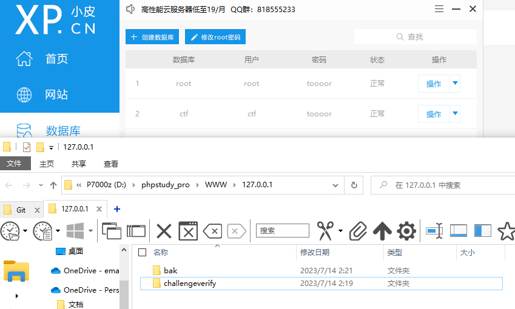
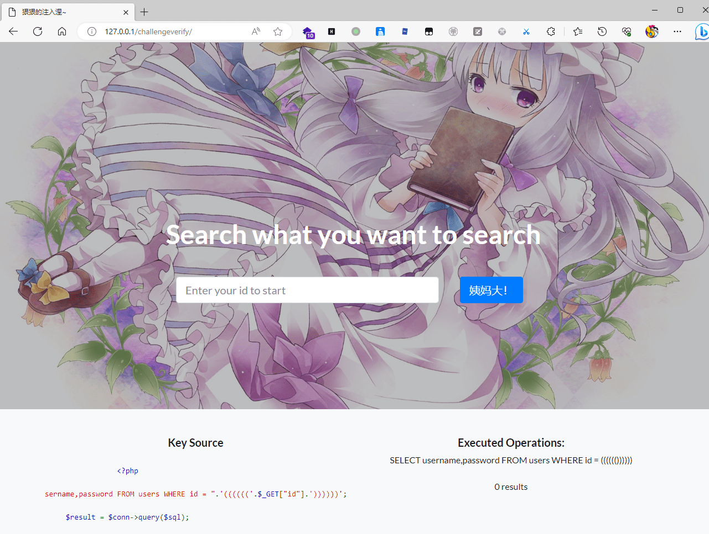
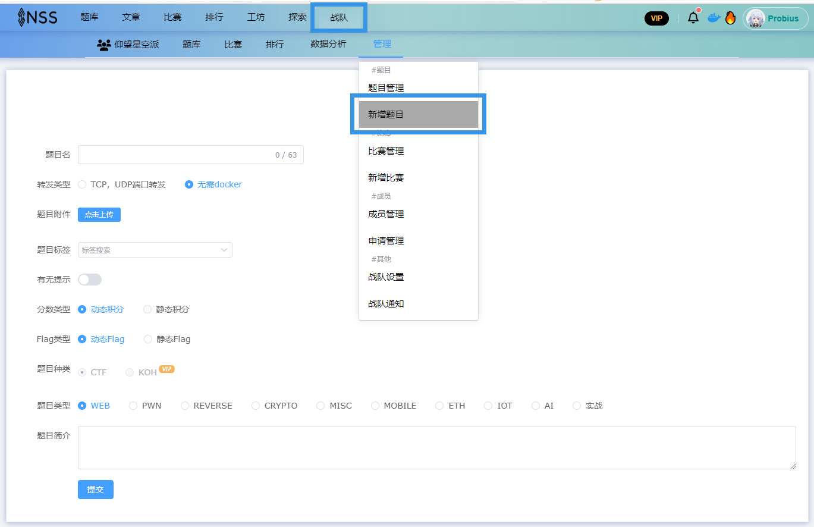
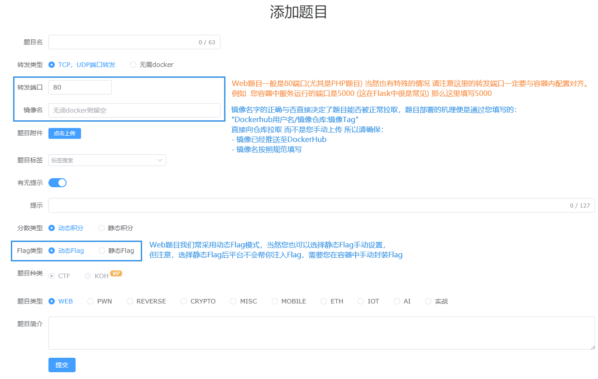

Web题目¶
前置知识¶
首先您需要清楚目前Web的题目类型 和 其可能会用到的语言技术 / 框架技术，可能会遇到的题目技术栈大概有以下几种:
-
PHP 一般容器页面技术为 Nginx + PHP | 当然在涉及到数据库交互时 使用 LNMP (Nginx MySQL PHP) 容器 | 极其少见的情况下会使用 Apache + PHP | 同样的数据库交互时使用 LAMP (Apache MySQL PHP) 容器。
-
Python 目前大多数Python题目都基于 Flask 框架，当然也有少数基于 Django 框架的题目。
-
Java
Java题目除了一般的 Jar 包外，还有基于 SpringBoot 框架的题目，基于 Tomcat 的题目也有。 -
Js
Js题目一般都是基于 Node.js 的，当然也有少数基于 Express 框架的题目。
目前我们的容器模板列表(Web)如下:
- web-flask-python_3.10
- web-flask-python_3.8
- web-java-openjdk8
- web-jetty-jdk8
- web-tomcat-jdk8
- web-lamp-php80
- web-lnmp-php73
- web-nginx-php73
- web-node
...我们会持续更新，我们也欢迎您提交Pull Requests来帮助我们完善模板
编写题目源码¶
如同现实或者说物理机上的 开发/生产 环境一样，您需要编写对应服务的源码，并将其放置在web服务的工作目录，这样才能运行。 这些操作在容器中也一样，我们推荐您在本地 或者 调试用的虚拟机/容器上 编写好源码后，再将其放置到我们的模板中。
下面我们以编写一道简单的SQL注入题目为例子，介绍以下编写题目源码的步骤。
首先，题目所需要的服务是 PHP 和 MySQL，简单的SQL注入，我们使用单个index.php作为web服务的核心即可，然后用 connect.php 来接入数据库
下面是index.php的源码:
<?php
error_reporting(0);
include "connect.php";
?>
<!DOCTYPE html>
<html>
#....省略的HTML代码....
<?php
$sql = "SELECT username,password FROM users WHERE id = ".'(((((('.$_GET["id"].'))))))';
echo "<h5>Executed Operations:</h5>"
.$sql
."<br><br>";
$result = $conn->query($sql);
if ($result->num_rows > 0) {
print_r(mysqli_fetch_all($result, MYSQLI_ASSOC));
} else {
echo "0 results";
}
?>
#....省略的HTML代码....
下面是connect.php的源码:
<?php
$servername = "localhost";
$username = "root";
$password = "toooor";
$dbname = "ctf";
$conn = new mysqli($servername, $username, $password, $dbname);
if ($conn->connect_error) {
die("Connection failed: " . $conn->connect_error);
}
?>
当你编写完题目核心的源码后，你需要在本地验证题目的可行性(至少能跑起来好吧),这里你可以使用小皮面板 或者 Linux上直接部署web环境 亦或者 直接使用我们的模板来验证题目的可行性。
如小皮面板：(注意要和本地环境的账户对齐，当你上传到模板后也需要注意账户问题)

将index.php和connect.php放置到小皮工作目录下(这里我们放在\phpstudy_pro\WWW\127.0.0.1\challengeverify)，
然后启动apache2 / Nginx 服务，访问 127.0.0.1/challengeverify/

当然在本地出题时 在这一步可能需要做一些调试工作 以及 一些题目的优化工作，这里我们不再赘述。 同时本地的调试 也是题目初步可行性的一种验证，下面您需要将您精心准备的题目转移到我们的模板中(嗯 也就是使用docker封装它)。
题目封装¶
我们已经在模板中帮您完成了大量且意义不大的单调工作，首先您需要将您的题目源码放置到模板的工作目录中，然后便是根据题目修改Dockerfile文件，因为涉及到sql服务 所以这里我们以web-nginx-mysql-php73为例子。 其目录结构如下:
+ web-nginx-mysql-php73
+ docker
- docker-compose.yaml # 该文件用于本地快速部署 简化测试流程
+ service
- docker-entrypoint.sh
+ src
- index.php
- Dockerfile
- db.sql
- README.md
- Dockerfile的内容如下
Dockerfile
FROM ctftraining/base_image_nginx_mysql_php_73 RUN rm -r /var/www/html/index.php && \ rm -rf /tmp/* && \ rm -rf /etc/apk COPY ./src/ /var/www/html COPY db.sql /var/db.sql COPY ./service/docker-entrypoint.sh /docker-entrypoint.sh RUN sh -c 'mysqld_safe &' \ && sleep 5s \ && mysqladmin -uroot password '123456' \ && mysql -e "source /var/db.sql;" -uroot -p123456 \ && chmod -R 777 /docker-entrypoint.sh \ && chmod -R 777 /var/db.sql \ && chown -R www-data:www-data /var/www/html CMD /docker-entrypoint.sh -
db.sql的内容如下
db.sql/* * db.sql 文件 * * 此文件用于初始化你的 MySQL 数据库。 * 它将在 Docker 容器启动时运行， * 并执行所有的 SQL 命令来设置你的数据库。 * * 你可以在这里创建你的数据库，创建表， * 插入数据，或执行任何其他的 SQL 命令。 * * 例如： * CREATE DATABASE IF NOT EXISTS your_database; * USE your_database; * CREATE TABLE your_table (...); * INSERT INTO your_table VALUES (...); * * 请根据你的需要修改此文件， */ CREATE DATABASE ctf; use ctf; create table users (id varchar(300),username varchar(300),password varchar(300)); insert into users values('1','tanji','OHHHHHHH'); insert into users values('2','fake_flag','F1rst_to_Th3_eggggggggg!} (4/4)'); -
docker-entrypoint.sh 的内容如下
docker-entrypoint.sh而您需要清楚的是:#!/bin/bash # Get the user user=$(ls /home) # Check the environment variables for the flag and assign to INSERT_FLAG if [ "$DASFLAG" ]; then INSERT_FLAG="$DASFLAG" elif [ "$FLAG" ]; then INSERT_FLAG="$FLAG" elif [ "$GZCTF_FLAG" ]; then INSERT_FLAG="$GZCTF_FLAG" else INSERT_FLAG="flag{TEST_Dynamic_FLAG}" fi # 将FLAG写入文件 请根据需要修改 echo $INSERT_FLAG | tee /home/$user/flag /flag # 将FLAG写入数据库 if [[ -z $FLAG_COLUMN ]]; then FLAG_COLUMN="flag" fi if [[ -z $FLAG_TABLE ]]; then FLAG_TABLE="flag" fi mysql -u root -p123456 -e "USE ctftraining; ALTER TABLE FLAG_TABLE CHANGE FLAG_COLUMN $FLAG_COLUMN CHAR(128) NOT NULL DEFAULT 'not_flag'; ALTER TABLE FLAG_TABLE RENAME $FLAG_TABLE; INSERT INTO $INSERT_FLAG VALUES('$INSERT_FLAG');" exec "$@" - src目录下的文件会被复制到容器的Web服务工作目录(/var/www/html)中，所以您需要把您的题目源码放置到src目录下
- Dockerfile 中大部分内容无需修改，您只需要关心
mysqladmin -uroot password '123456'这一步是在设置mysql密码，请注意这里的密码最好不要使用默认弱口令，当然同时也要注意密码要与您的源码中的密码对齐，否则会导致数据库连接失败。 mysql -e "source /var/db.sql;"这一步是在利用db.sql文件(默认为空)初始化数据库，您需要将您的数据库初始化脚本放置到db.sql中，我们强烈不推荐您在这里直接写入sql语句。- 最后动态flag的初始化在 docker-entrypoint.sh 文件中完成，如果您在初始化数据库的时候修改了密码 请在该部分同步修改
警告
除非您知道您在做什么，否则不要随意修改该部分所提到能够修改内容以外的所以代码，否则可能会导致题目无法正常运行。
镜像推送¶
按照对应步骤修改完Dockerfile后，您需要在该模板的根目录下执行以下命令来构建本地镜像:
一般我们需要将镜像推送至dockerhub，这样我们才能在比赛中使用。docker tag imagesName:Tag dockerhubUserName/imagesName:Tag
docker push dockerhubUserName/imagesName:Tag
题目部署¶
下面我们以NSSCTF平台为例，介绍如何在平台上部署一个动态容器的题目。
注意
同样，在这里，我们默认您:
拥有NSSCTF平台账号，并且您拥有您团队的管理资格，如果有疑问可以阅读NSS平台使用指南.
在战队标签中 点击 我的战队 在管理标签处悬停，选择 新增题目 即可看到如下界面。

您需要注意的地方 已在图中标出: 
对于本Demo题目，我们填写的内容如下:
- 题目名称: ez_SQL
- 题目描述: 很基础的SQL注入，就是括号有点多(Flag位于数据库中)
- 转发端口: 80
- 镜像名称: probius/litctf2023:Web_SQL
如果您打包时的镜像名为:
dockerhubUserName/imagesName:Tag那么这里就填写dockerhubUserName/imagesName:Tag以本镜像为例 我们打包使用的指令为docker build -t probius/litctf2023:Web_SQL .所以这里填写probius/litctf2023:Web_SQL - Flag类型: 动态Flag
至此，便完成了Web题目命题的几乎所有流程，当然在编写文档时我们省略了一些无关紧要的步骤，如果您有疑问，可以在下面的评论区提出，或者提交issue，如果您对镜像模板有使用上的问题，或者您想要帮助我们完善模板，欢迎在项目Ctf-Docker-Template 【https://github.com/CTF-Archives/ctf-docker-template】中提交issue或者PR。
PWN题目¶
前置知识¶
编写题目源码/编译二进制文件¶
题目封装¶
镜像推送¶
(该部分参考Web部分的镜像推送 我们不再赘述)